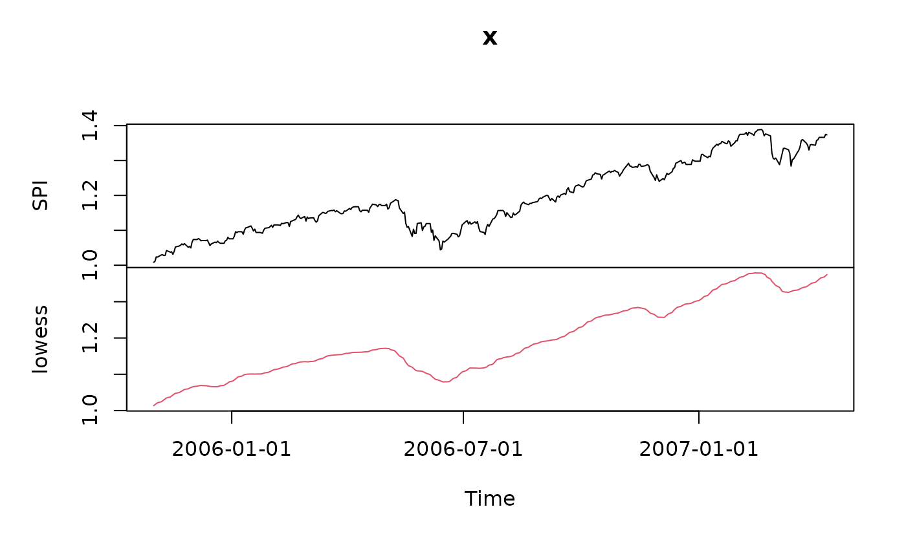

Turning points of a time series
fin-turnpoints.RdExtracts and analyzes turn points of an univariate
"timeSeries" object.
Arguments
- x
an univariate 'timeSeries' object of financial indices or prices.
- ...
optional arguments passed to the function
na.omit.- doplot
a logical flag, should the results be plotted? By default TRUE.
Details
The function turns determines the number and the position of
extrema (turning points, either peaks or pits) in a regular time series.
The function turnsStats calculates the quantity of information
associated to the observations in this series, according to Kendall's
information theory.
The functions are borrowed from the contributed R package pastecs
and made ready for working together with univariate timeSeries
objects. You need not to load the R package pastecs, the code parts
we need here are builtin in the timeSeries package.
We have renamed the function turnpoints to turns to
distinguish between the original function in the contributed R package
pastecs and our Rmetrics function wrapper.
For further details please consult the help page from the contributed R
package pastecs.
Value
for turns, an object of class timeSeries.
for turnsStats, an object of class turnpoints with the
following entries:
- data
The dataset to which the calculation is done.
- n
The number of observations.
- points
The value of the points in the series, after elimination of ex-aequos.
- pos
The position of the points on the time scale in the series (including ex-aequos).
- exaequos
Location of exaequos (1), or not (0).
- nturns
Total number of tunring points in the whole time series.
- firstispeak
Is the first turning point a peak (TRUE), or not (FALSE).
- peaks
Logical vector. Location of the peaks in the time series without ex-aequos.
- pits
Logical vector. Location of the pits in the time series without ex-aequos.
- tppos
Position of the turning points in the initial series (with ex-aequos).
- proba
Probability to find a turning point at this location.
- info
Quantity of information associated with this point.
Author
Frederic Ibanez and Philippe Grosjean for code from the contributed
R package pastecs and Rmetrics for the function wrapper.
References
Ibanez, F., 1982, Sur une nouvelle application de la theorie de l'information a la description des series chronologiques planctoniques. J. Exp. Mar. Biol. Ecol., 4, 619--632
Kendall, M.G., 1976, Time Series, 2nd ed. Charles Griffin and Co, London.
Examples
## Load Swiss Equities Series -
SPI.RET <- LPP2005REC[, "SPI"]
head(SPI.RET)
#> GMT
#> SPI
#> 2005-11-01 0.008414595
#> 2005-11-02 0.002519342
#> 2005-11-03 0.012707292
#> 2005-11-04 -0.000702757
#> 2005-11-07 0.006205226
#> 2005-11-08 0.000329260
## Cumulate and Smooth the Series -
SPI <- smoothLowess(cumulated(SPI.RET), f=0.05)
plot(SPI)

## Plot Turn Points Series -
SPI.SMOOTH <- SPI[, 2]
tP <- turns(SPI.SMOOTH)
plot(tP)
## Compute Statistics -
turnsStats(SPI.SMOOTH)
#> Turning points for: x
#>
#> nbr observations : 377
#> nbr ex-aequos : 0
#> nbr turning points: 14 (first point is a peak)
#> E(p) = 250 Var(p) = 66.7 (theoretical)
#>
#> point type proba info
#> 1 28 peak 2.894020e-32 104.76862
#> 2 34 pit 1.941760e-24 78.76891
#> 3 55 peak 1.370106e-21 69.30620
#> 4 58 pit 9.874935e-31 99.67600
#> 5 85 peak 6.665581e-30 96.92111
#> 6 88 pit 5.157541e-54 177.01743
#> 7 130 peak 2.664544e-90 297.55964
#> 8 163 pit 7.413829e-51 166.52811
#> 9 178 peak 2.069038e-16 52.10189
#> 10 184 pit 1.402003e-137 454.61666
#> 11 271 peak 3.830644e-146 483.06391
#> 12 286 pit 1.471670e-80 265.19679
#> 13 337 peak 7.722581e-84 276.09288
#> 14 355 pit 6.778577e-39 126.79421